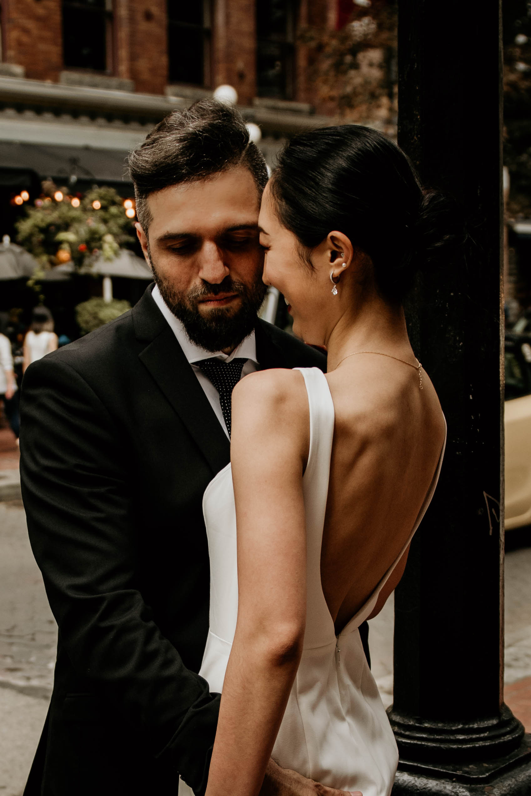

Charles Iliya Krempeaux

Charles Iliya Krempeaux has more than ¼ century professional experience — entrepreneur, advisor, executive (CEO, CTO, COO), business person, product researcher, product developer, computer scientist, software engineer, manager, member board of directors, chairman.
He is the CEO of Railtown — a Vancouver based search lab, incubator, and accelerator. He is the founding CTO of Canada's first neo-bank — the fintech Koho Financial. He was Principal Software Engineer & Architect at Electronic Arts (EA). He is one of the 4 original senior members of Hootsuite's engineering team. He created a credit bureau. He was a pioneer in the online advertising space, having created the world's first online advertising network. And had technology he created purchased by Microsoft and later sold to Facebook.
Charles has created more than a dozen startups — some of these startups are now well known names, and valued close to $1 billion — others ended up being sold to the largest well known — top 100 — companies in the world.
Personal Life
Charles Iliya Krempeaux is the eldest son of Charles Robert Krempeaux & Malekeh Agha Safavi.
Charles has mostly resided in Metro Vancouver — on the west coast of Canada. Although twice — once as a child, and once as a teenager — he resided in the Dallas Metroplex (in the southern U.S.) in Texas, due to his father's work as a telecommunications engineer.
Charles was actively involved in sports from a very young age. Having played competitively in basketball, football, ice hockey, roller hockey, soccer, tennis, weight lifting.
Charles started formally training in martial arts at a very young age. He continued training, as well as competing in tournaments, for about 20 years. His training included: shōtōkan karate, judo, jujutsu, tae kwon do, and Greco-Roman wrestling.
Charles was attracted to mathematics, and various sciences from a very young age. He formally pursued these interests when he attended university.
Charles is a self-taught programmer. But later formerly studied programming at university as part of his formal computer science education.
Charles formerly studied mathematics, computer science, and physics at Simon Fraser University.
Today Charles, his wife, and his children reside in Metro Vancouver — on the west coast of Canada.